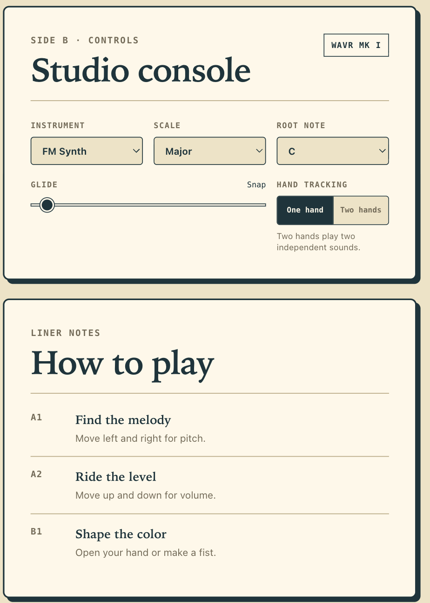
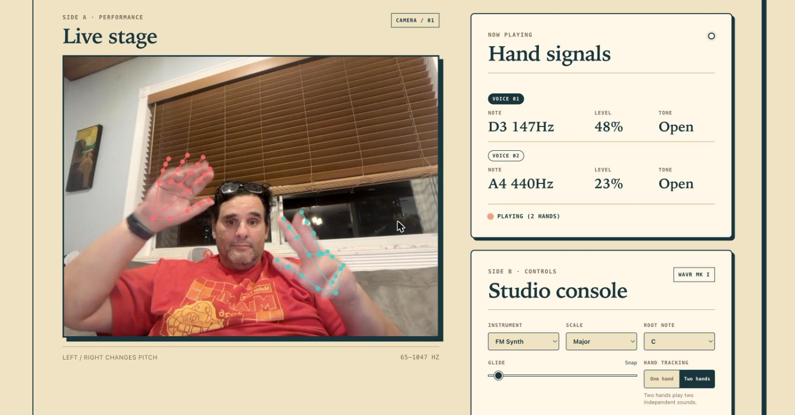
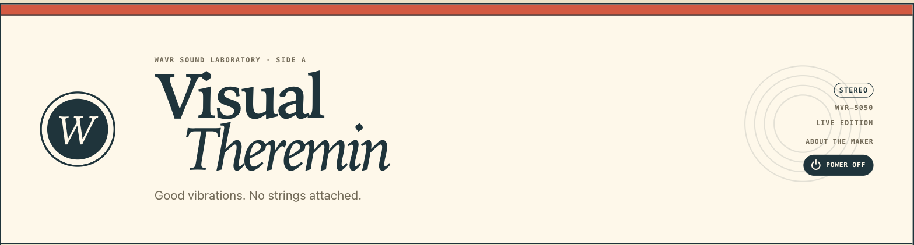
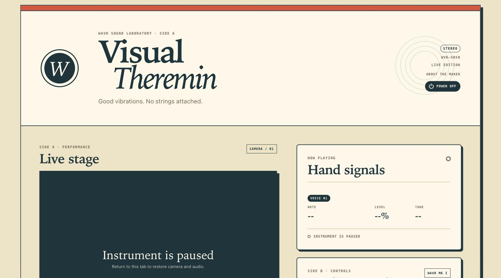

A theremin you play by waving your hands at a webcam. Built in two days for Maker Faire Miami 2026. Finished six months late. Aimed at 2027.
Every maker has a folder of projects that missed their deadline. This is the story of mine.
In February I built a musical instrument in a weekend. It ran in the browser, used the webcam to track your hands, and turned movement into sound. No strings, no keys, no touching anything. I wanted it on a big screen at Maker Faire Miami 2026, next to the robot.
The robot is why it never got there. The Omnibot ate every spare hour between February and April, and Wavr sat in a folder making no sound at all. This weekend I finally dusted it off and finished it. Next year it gets its booth.

What a theremin is, and what this one isn't
The theremin is the world's oldest electronic instrument you play without touching. Leon Theremin built it in 1920: two antennas, one for pitch, one for volume, and your hands moving in the air between them. It's the woo-oo-EEE-oo sound in every 1950s sci-fi movie.
Wavr swaps the antennas for a webcam. MediaPipe hand tracking finds your hand 30 times a second, and three things about it become three musical controls:
| Gesture | Controls | Mapping |
|---|---|---|
| Move left / right | Pitch | 65 Hz (C2) up to 1047 Hz (C6), logarithmic |
| Move up / down | Volume | Quiet at the bottom, loud at the top |
| Fist / open hand | Tone | Low-pass filter, 200 Hz dark to 8000 Hz bright |
That third row is the part a real theremin can't do. An antenna knows where your hand is. A camera knows what your hand is doing. Closing your fist darkens the sound like rolling off a tone knob, and opening it makes the note bloom. Show a hand and it sings. Take it away and it fades out.
Two days in February
The first commit is dated February 12 and titled "Initial commit: Visual Thermin web app." I misspelled theremin in my own repo. That's how fast I was moving.
The core loop came together in an evening because the browser now ships everything you need. MediaPipe Hands gives you 21 landmarks per hand, in JavaScript, from a CDN. The Web Audio API gives you oscillators, filters, and gain nodes. Wire landmark positions to synth parameters and you have an instrument. There's no backend, no build step, no npm install. It's an index.html and three JS files, hosted for free on GitHub Pages.
By February 13 it had seven synth modes: FM Synth, Clean Wave, Warm Tone, Pad, Theremin (a sine with a vibrato LFO, out of respect for the original), Organ, and Bitcrush. Then I committed "make static," closed the laptop, and went back to teaching a 1984 robot to find humans.
The booth trick: no wrong notes
Here's the thing I care most about, because it's the difference between a tech demo and an instrument a six-year-old will refuse to leave.
A real theremin is famously one of the hardest instruments in the world. Pitch is continuous, so every note is a little flat or a little sharp, and that's with years of practice. If I put that on a booth table, every kid produces a siren and walks away.
So Wavr quantizes. Pick a scale, and the engine snaps your hand position to the nearest note that belongs in it. There are 10 scales in all 12 roots, from honest Chromatic all the way to Whole Tone. Set it to Minor Pentatonic and there are no wrong notes anywhere on the screen. Anything anyone plays sounds intentional. It's the same trick that makes wind chimes sound good.
The Glide slider decides how much theremin is left in the theremin. All the way down, notes snap instantly and it plays like an invisible keyboard. Slide it up and you get up to 500 ms of portamento, notes smearing into each other, and the ghost of Leon Theremin comes back into the room.

Two hands, two voices
Flip the toggle and Wavr tracks two hands, each with its own independent voice. Left hand holds a low drone while the right plays a melody over it. Or, and this is the real reason it exists, two kids stand side by side and each one owns a hand.

This was the hardest code in the project, and none of it is audio. When two hands cross or one drops out of frame for a few milliseconds, the tracker has to decide which hand is which. Get it wrong and the voices swap: your drone jumps up two octaves and the melody falls into the basement. Wavr scores every possible assignment using handedness and recent position, remembers each hand's identity for 750 milliseconds through tracking flicker, and rejects any match that would require a hand to teleport almost half the frame in a single step. Boring, invisible, and the whole difference between a duet and a mess.
The record sleeve
Every instrument needs an identity. Wavr's interface is a 1960s record sleeve: cream paper, one red stripe, Side A is the performance stage, Side B is the studio console, and the instructions are liner notes. The model number badge reads WVR-5050 because the dev server runs on port 5050. The tagline wrote itself: good vibrations, no strings attached.

What "finished" actually meant
The February version made sound. This weekend's version can survive a booth. Almost nothing in between was about music.
The Omnibot taught me this lesson the hard way in front of actual children: public demos don't fail at the cool part. They fail at the boring edges. This weekend's refresh touched about 2,000 lines, and the telling part is that almost none of them make a new sound. They went to the edges:
- Camera recovery. Permission denied, camera busy, camera unplugged, insecure origin, CDN unreachable. Each one now gets a clear message and a retry path instead of a silently black stage.
- A power button that means it. Power Off stops every voice, releases the camera track, and suspends the audio context. The webcam light actually goes off. Power On brings it all back from a single click.
- Lifecycle cleanup. Hide the tab and Wavr lets go of your camera and audio instead of squatting on them in the background. The webcam light goes off when you stop looking at it.
- Startup races. Camera startup is generational: if you power off while the camera is still starting, the late callback gets discarded instead of resurrecting a zombie video stream. Nobody will ever notice this working, which is the point.
- Pinned dependencies. MediaPipe loads from a CDN, and the exact version is now pinned. An upstream update the night before the Faire cannot change how the instrument behaves.

None of this is why anyone builds a project. All of it is why a project survives eight hours of strangers.
The plan for Maker Faire Miami 2027
A booth instrument you play without touching is close to the perfect Faire exhibit. Nothing to break, nothing to sanitize, no parts to walk off the table, and it resets itself the moment a kid walks away. The setup is a Raspberry Pi 5 running Chromium in kiosk mode, a webcam, a big monitor, and a speaker with some real low end for the C2.
The recipe on the Pi is four lines:
git clone https://github.com/MarioCruz/Wavr.git
cd Wavr
python3 -m http.server 5050 --bind 127.0.0.1
chromium-browser --kiosk http://localhost:5050Scale locked to Minor Pentatonic, two-hand mode on, glide somewhere in the middle. Between now and April there's a wishlist: a visualizer trail behind the hand, maybe a simple looper so kids can layer a drone and jam over it. But the instrument itself is done, and this time it's done in August instead of "almost done" in April.
Try it right now
This is the best part of a browser instrument: you don't have to imagine it. Open mariocruz.github.io/Wavr in Chrome or any Chromium browser, allow the camera, and wave. It needs HTTPS or localhost for camera access, and everything runs on your machine. No video leaves your computer.
The code is MIT licensed at github.com/MarioCruz/Wavr. If you build a booth around it for your own Faire, I want to hear about it.
See you at Maker Faire Miami 2027. I'll be the one waving at a monitor, and this time it'll be on purpose.
Related builds for Maker Faire Miami:
- Tomy Omnibot Part 4: It's Alive, the robot that stole Wavr's schedule
- Tomy Omnibot Part 5: The WiFi Problem, where I learned what booths do to demos
- The Chladni Plate, more sound made visible